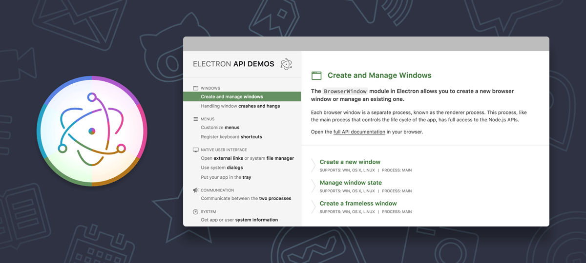

Bleeding Edge Web: May 2016
Announcements
News from the Bleeding Edge
— Brian Moeskau (@bmoeskau)
All About Node 6 (slides)
— Evan Lucas (@evanhlucas)
Lightning Talks
Thanks to our venue sponsor:
Thanks to our food sponsor:
News from the
Bleeding Edge
Browser Pop Quiz
Last version check — April 27, 2016:
Browser Pop Quiz
As of May 25, 2016:
Opera 37
Released May 4 — Release Notes
- Added support for Chromium version 50
- Added built-in ad blocker
- Opera 38 currently in beta
Notable Releases
- Babel is now compiled with Babel 6
- Fixes a major npm deduping issue with Babel 5 dependencies
Notable Releases

Notable Releases
- JS-based mobile apps with native UI bindings
- Supports TypeScript and Angular 2.0
- Open source
- Backed by Telerik, paid support options
Notable Releases
- Build native desktop apps with HTML, CSS and JS
- New Electron API Demos app
- New Chrome extension Devtron for debugging
- New 3.0 version of Spectron for integration testing

Notable Releases
- Final version barring major bugs
- IE 9+ only (stick to 2.x for IE 6-8)
- jQuery.Deferred now Promises/A+ compatible
- Animations now use requestAnimationFrame
- Upgrade guide available

A new developer experience for rapidly building fast, safe systems
- Developed by Facebook
- A new interface to OCaml
- "Resembles a typed subset of modern JavaScript (the good parts)"
- Compare to JS
Node v8_inspector support
Node.js can now be debugged and profiled via Chrome DevTools
- Currently an open PR in the Node github repo
- Breakpoints, stepping, source maps, live editing, etc.
- Console with ES6 support
A cool way to use natural language in JavaScript
- 100k, no dependencies, IE9+
- Aims for 80-20 rule in accuracy / complexity
nlp.statement('She sells seashells').negate().text()
// She doesn't sell seashells
nlp.person("Tony Hawk").pronoun();
// "he"
nlp.value("five hundred and sixty").number;
// 560
And now for something completely different...
A small CSS library to build your own Star Wars-esque intro crawl
A civic hackathon that lets you find the projects and the people you need to
change your community for the better
- Free to attend! Check out the project proposals
- Audience: "hackers"
- June 3-5 at St. Edwards University
Learn HTML, CSS and basic JS skills over 4 weeks in June
- Perfect for non-techies who want exposure to new tech skills
- $750 per student — more
info and sign up
- Hosted at MakerSquare in downtown Austin
Thanks!
 ←
→
←
→
/
#